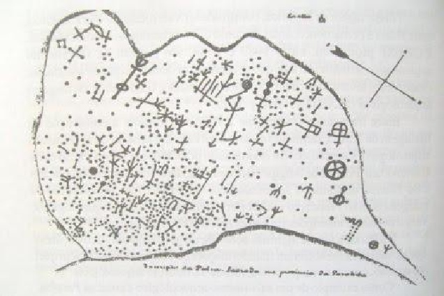

Pedra Lavrada é um município brasileiro do estado da Paraíba. Está localizado na Região Geográfica Imediata de Cuité-Nova Floresta. De acordo com o censo realizado pelo IBGE (Instituto Brasileiro de Geografia e Estatística) no ano de 2009, sua população é de 7.035 habitantes. Área territorial de 390 km². Rica por suas riquezas naturias, Pedra Lavrada vem sendo visitada por amantes da natureza e da história.
Geografia
O município está incluído na área geográfica de abrangência do semiárido brasileiro, definida pelo Ministério da Integração Nacional em 2005.[7] Esta delimitação tem como critérios o índice pluviométrico, o índice de aridez e o risco de seca. O município destaca-se, também, pela exploração de minérios, exportando para outros países pedras preciosas retiradas de seu subsolo.
Recursos Minerais
Os minerais explorados estão divididos em: tantalita, xelita, quartzo, berilo, caulim, calcário, calcedônia, mica, barita, feldspato, entre outros. Segundo dados da prefeitura e sindicato de mineradores, 10% da mão-de-obra total existente no município é direcionada a exploração de recursos minerais, sendo este percentual mais elevado no período da estiagem. Apesar da região ser predominantemente rica em recursos minerais, nota-se que as primeiras ações e planejamento voltados para a aplicação de recursos no setor com consequência direta na distribuição de renda no âmbito da comunidade estão sendo efetivados somente agora.
,
CURIOSIDADES
| Sítios Arqueológicos | Trilhas | Datas comemorativas |
|---|---|---|
| Pedra Lavrada é reconhecida como umas das cidades com mais sítios arqueológicos catalogados no país, sendo o sítio arqueológico Canta Galo um dos mais importantes, que fica localizado a 1 km da cidade. Neste sítio arqueológico, foi encontrada a pedra de Retumba, pedra essa que foi procurada por muitos anos devido sua importância histórica.  |
|
Matéria Completa |